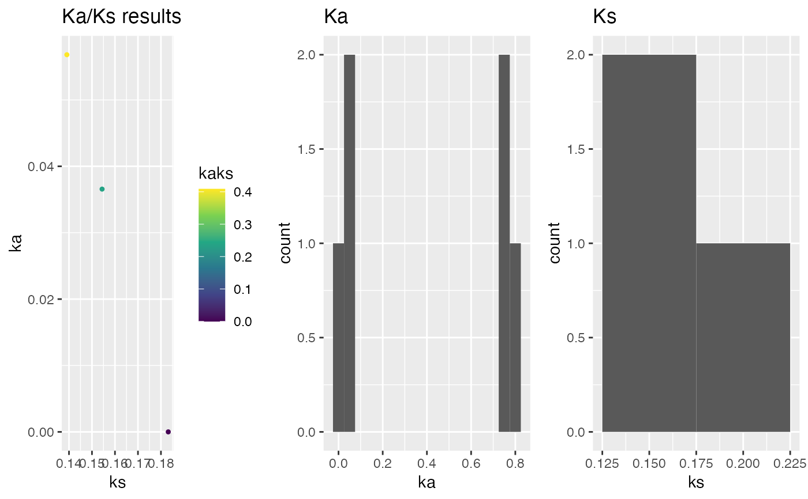

This function calculates Ka/Ks (dN/dS; accoring to
Li (1993) or Yang and Nielson (2000) for each
(conditional-)reciprocal best hit (CRBHit) pair. The names of the rbh
columns must match the names of the corresponding cds1 and cds2
DNAStringSet vectors.
rbh2kaks(
rbhpairs,
cds1,
cds2,
model = "Li",
plotHistPlot = FALSE,
plotDotPlot = FALSE,
dag = NULL,
gene.position.cds1 = NULL,
gene.position.cds2 = NULL,
tandem.dups.cds1 = NULL,
tandem.dups.cds2 = NULL,
colorBy = "none",
threads = 1,
kakscalcpath = paste0(find.package("CRBHits"), "/extdata/KaKs_Calculator2.0_src/src/"),
...
)(conditional-)reciprocal best hit (CRBHit) pair result
(see cds2rbh) [mandatory]
cds1 sequences as DNAStringSet or url for first
crbh pairs column [mandatory]
cds2 sequences as DNAStringSet or url for second
crbh pairs column [mandatory]
specify codon model either "Li" or "NG86" or one of KaKs_Calculator2 model "NG", "LWL", "LPB", "MLWL", "MLPB", "GY", "YN", "MYN", "MS", "MA", "GNG", "GLWL", "GLPB", "GMLWL", "GMLPB", "GYN", "GMYN" [default: Li]
specify if histogram should be plotted [default: TRUE]
specify if dotplot should be plotted (mandatory to define
gene.position.cds1 and gene.position.cds1) [default: FALSE]
specify DAGchainer results as obtained via `rbh2dagchainer()` [default: NULL]
specify gene position for cds1 sequences
(see cds2genepos) [default: NULL]
specify gene position for cds2 sequences
(see cds2genepos) [default: NULL]
specify tandem duplicates for cds1 sequences
(see tandemdups) [default: NULL]
specify tandem duplicates for cds2 sequences
(see tandemdups) [default: NULL]
specify if Ka/Ks gene pairs should be colored by "rbh_class", dagchainer", "tandemdups" or "none" [default: none]
number of parallel threads [default: 1]
specify the PATH to the KaKs_Calculator binaries [default: /extdata/KaKs_Calculator2.0/src/]
other codon alignment parameters
(see cds2codonaln) and other plot_kaks parameters
(see plot_kaks)
Ka/Ks values
Li WH. (1993) Unbiased estimation of the rates of synonymous and nonsynonymous substitution. J. Mol. Evol., 36, 96-99.
Wang D, Zhang Y et al. (2010) KaKs_Calculator 2.0: a toolkit incorporating gamma-series methods and sliding window strategies. Genomics Proteomics Bioinformatics. 8(1), 77-80.
Yang Z and Nielson R. (2000) Estimating synonymous and nonsynonymous substitution rates under realistic evolutionary models. Mol. Biol. Evol., 17(1), 32-43.
## load example sequence data
data("ath", package="CRBHits")
data("aly", package="CRBHits")
## load example CRBHit pairs
data("ath_aly_crbh", package="CRBHits")
## only analyse subset of CRBHit pairs
ath_aly_crbh$crbh.pairs <- head(ath_aly_crbh$crbh.pairs)
ath_aly_crbh.kaks <- rbh2kaks(
rbhpairs=ath_aly_crbh,
cds1=ath,
cds2=aly,
model="Li")
head(ath_aly_crbh.kaks)
#> aa1 aa2 rbh_class ka ks vka
#> 1 AT1G01040.1 Al_scaffold_0001_3256 rbh 0.74651201 9.9999990 0.0032172312
#> 2 AT1G01050.1 Al_scaffold_0001_128 rbh 0.00000000 0.1831839 0.0000000000
#> 3 AT1G01080.3 Al_scaffold_0001_125 rbh 0.05680851 0.1390746 0.0001612571
#> 4 AT1G01180.1 Al_scaffold_0001_114 rbh 0.03656808 0.1543978 0.0001014973
#> 5 AT1G01190.2 Al_scaffold_0001_4419 rbh 0.75036088 9.9999990 0.0093948533
#> 6 AT1G01260.3 Al_scaffold_0001_1326 rbh 0.78228833 9.9999990 0.0051807370
#> vks
#> 1 9.999999000
#> 2 0.003022307
#> 3 0.001531756
#> 4 0.001249826
#> 5 9.999999000
#> 6 9.999999000
## plot kaks
g.kaks <- plot_kaks(ath_aly_crbh.kaks)
